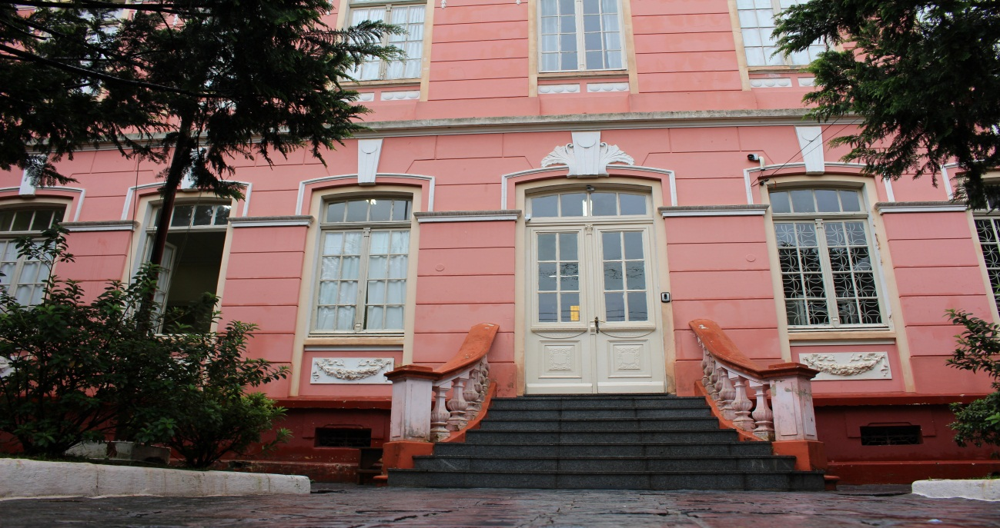

O prédio do Colégio foi inaugurado em 1924, para funcionar a Escola Normal de Ponta Grossa. Em 1939, passa a ser sede do Ginásio Regente Feijó. Caracteriza-se por ser um marco na paisagem urbana pela beleza de sua construção, marcada pelo estilo eclético, apresentando vestígios do estilo clássico e da art-noveau.Caracteriza-se por ser um grande Colégio Estadual onde estudaram muitos personagens da história local, sendo até hoje uma referência por sua importância educacional. Foi tombado como Patrimônio Cultural do Paraná em 1990.Fonte: Prefeitura Municipal.
O Colégio Estadual Regente Feijó é uma escola pública brasileira de ensino médio e profissional, localizada no município de Ponta Grossa. O colégio recebeu autorização de funcionamento em 21 de fevereiro de 1927, através do Parecer nº 11, publicado no Diário Oficial da União nº 5052, de 5 de março de 1927 e recebeu o nome em homenagem a Diogo Antônio Feijó. Sua finalidade consiste em ofertar o ensino médio, bem como, o ensino profissional (integrado e subsequente), tendo como entidade mantenedora o Governo do Estado do Paraná. Atualmente, o colégio conta com 25 (vinte e cinco) salas de aula disponíveis para atender cerca de 2.700 alunos (2008).[3] O Colégio Estadual Regente Feijó, está localizado à Rua do Rosário, 194, Centro, no município de Ponta Grossa, Paraná. O edifício foi tombado patrimônio histórico em 1990.[4]
